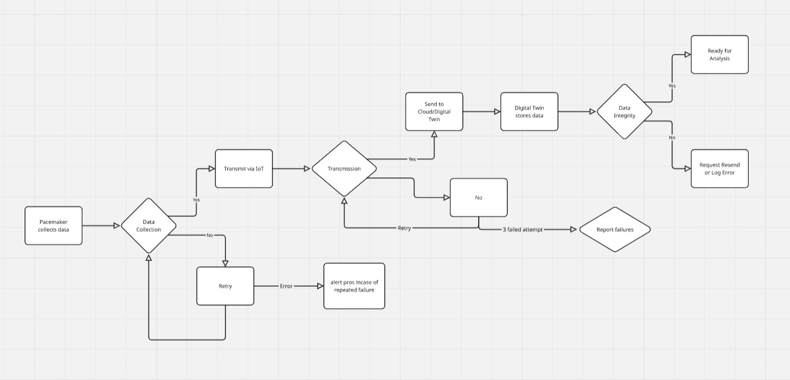
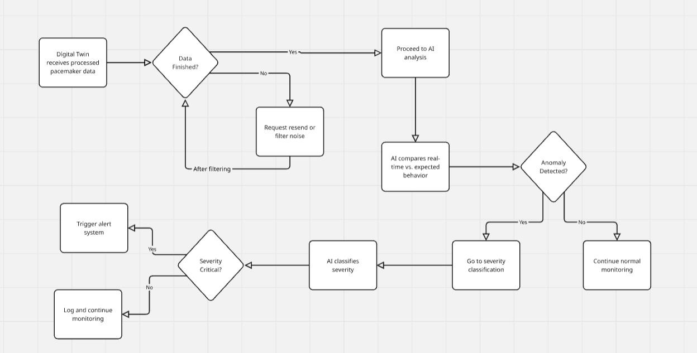
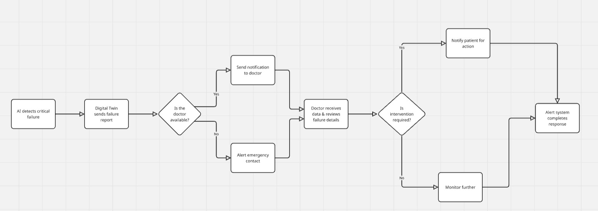

Simplified and detailed flows for complete understanding.
This flowchart shows the step-by-step data journey from the pacemaker’s sensors to the virtual twin hosted in the cloud.
The following diagram explains how the AI system compares expected digital twin behaviour with real-world data to flag anomalies.
After detection of anomalies, this system ensures quick doctor notification via secure dashboards and alert delivery protocols.
